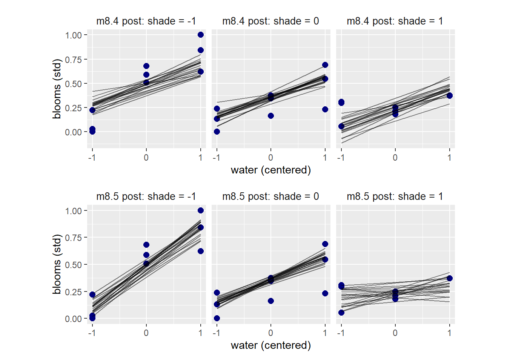
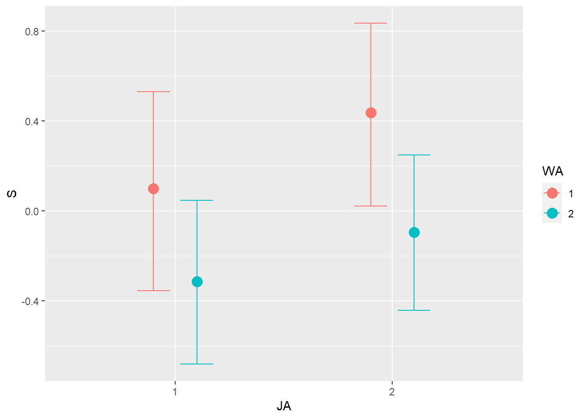

8 Conditional Manatees
8.1 Building an interaction
アフリカとそれ以外の地域で地形の悪さ(terrain ruggedness)とGDPの関係を調べる。地形が悪いほど経済活動が阻害され、GDPも小さくなると予想されるが、アフリカではむしろ逆の関係がみられる。
## データ読み込み
data(rugged)
d <- rugged
head(rugged)## isocode isonum country rugged rugged_popw rugged_slope rugged_lsd
## 1 ABW 533 Aruba 0.462 0.380 1.226 0.144
## 2 AFG 4 Afghanistan 2.518 1.469 7.414 0.720
## 3 AGO 24 Angola 0.858 0.714 2.274 0.228
## 4 AIA 660 Anguilla 0.013 0.010 0.026 0.006
## 5 ALB 8 Albania 3.427 1.597 10.451 1.006
## 6 AND 20 Andorra 5.717 6.722 17.774 1.616
## rugged_pc land_area lat lon soil desert tropical dist_coast
## 1 0.000 18 12.508 -69.970 21.324 0.000 100.000 0.001
## 2 39.004 65209 33.833 66.026 27.849 4.356 0.000 0.922
## 3 4.906 124670 -12.299 17.551 26.676 0.425 44.346 0.428
## 4 0.000 9 18.231 -63.064 100.000 0.000 100.000 0.000
## 5 62.133 2740 41.143 20.070 68.088 0.000 0.000 0.048
## 6 99.064 47 42.551 1.576 0.000 0.000 0.000 0.134
## near_coast gemstones rgdppc_2000 rgdppc_1950_m rgdppc_1975_m rgdppc_2000_m
## 1 100.0000 0 NA NA NA NA
## 2 0.0000 0 NA 644.756 720.633 565.231
## 3 13.1587 47756 1794.729 1051.822 1073.036 765.215
## 4 100.0000 0 NA NA NA NA
## 5 94.6919 0 3703.113 1001.339 2289.472 2741.420
## 6 0.0000 0 NA NA NA NA
## rgdppc_1950_2000_m q_rule_law cont_africa cont_asia cont_europe cont_oceania
## 1 NA NA 0 0 0 0
## 2 679.791 -1.687 0 1 0 0
## 3 1106.763 -1.567 1 0 0 0
## 4 NA NA 0 0 0 0
## 5 1931.784 -0.820 0 0 1 0
## 6 NA 1.515 0 0 1 0
## cont_north_america cont_south_america legor_gbr legor_fra legor_soc legor_deu
## 1 1 0 0 1 0 0
## 2 0 0 0 1 0 0
## 3 0 0 0 1 0 0
## 4 1 0 NA NA NA NA
## 5 0 0 0 0 1 0
## 6 0 0 0 1 0 0
## legor_sca colony_esp colony_gbr colony_fra colony_prt colony_oeu
## 1 0 0 0 0 0 0
## 2 0 0 0 0 0 0
## 3 0 0 0 0 1 0
## 4 NA 0 0 0 0 0
## 5 0 0 0 0 0 0
## 6 0 0 0 0 0 0
## africa_region_n africa_region_s africa_region_w africa_region_e
## 1 0 0 0 0
## 2 0 0 0 0
## 3 0 0 0 0
## 4 0 0 0 0
## 5 0 0 0 0
## 6 0 0 0 0
## africa_region_c slave_exports dist_slavemkt_atlantic dist_slavemkt_indian
## 1 0 0 NA NA
## 2 0 0 NA NA
## 3 1 3610000 5.669 6.981
## 4 0 0 NA NA
## 5 0 0 NA NA
## 6 0 0 NA NA
## dist_slavemkt_saharan dist_slavemkt_redsea pop_1400 european_descent
## 1 NA NA 614 NA
## 2 NA NA 1870829 0
## 3 4.926 3.872 1223208 2
## 4 NA NA NA NA
## 5 NA NA 200000 100
## 6 NA NA NA NA## 標準化(GDPは対数をとる)
library(lemon)
d %>%
dplyr::select(country,cont_africa,rugged,rgdppc_2000) %>%
na.omit() %>%
mutate(G = log(rgdppc_2000)/mean(log(rgdppc_2000)),
C = as.factor(cont_africa)) %>%
mutate(C = fct_relevel(C, "1","0")) %>%
mutate(C = dplyr::recode(C,"1"="African nations","0"="Non-African nations")) %>%
stats::na.omit() %>%
mutate(R = rugged/max(rugged)) -> d2
## プロットする
d2 %>%
ggplot(aes(x = R, y = G))+
geom_point(aes(color = C,
shape = C),
size = 2.5)+
geom_smooth(method="lm",color="black")+
scale_color_manual(values = c("navy","black"))+
scale_shape_manual(values = c(16,1))+
geom_text_repel(data = d2 %>%
filter(country %in% c("Seychelles","Lesotho","Switzerland","Tajikistan")),
aes(label = country))+
facet_rep_wrap(~ C, scales = "free_y")+
labs(x = "ruggedness(std)",
y = "log GDP (as proportion of mean)")+
theme(legend.position = "none",
strip.background = element_blank(),
aspect.ratio=1,
strip.text = element_text(size=12))
これはなぜだろうか？おそらく、RもGもともに未知の変数(ex. 他の地理的特徴、奴隷制による被害の大きさ)によって影響を受けているからだと思われる。
これについては最後のPracticeで考える。
8.1.1 Making a rugged model
まずは交互作用のないシンプルなモデルを考える。
\(\alpha\)は\(r_{i}-\bar{r}\)が0、すなわち\(r_{i}\)が平均のときのGの値(平均1)なので、およそ1くらいになるはず。よって、\(\alpha\)の事前分布は平均1、標準偏差1の正規分布とする。
\[
\begin{aligned}
log(y_{i}) &\sim Normal(\mu_{i},\sigma)\\
\mu_{i} &= \alpha + \beta(r_{i} - \bar{r})\\
\alpha &\sim Normal(1,1)\\
\beta &\sim Normal(0,1)
\end{aligned}
\]
d2 %>%
mutate(R_c = R - mean(R)) -> d2
b8.1_pre <- brm(
data = d2,
family = gaussian,
formula = G ~ 1 + R_c,
prior = c(prior(normal(1, 1), class = Intercept),
prior(normal(0, 1), class = b),
prior(exponential(1), class = sigma)),
seed=8, sample_prior=TRUE,
backend = "cmdstanr",
file = "output/Chapter8/b8.1_pre"
)まずは事前分布を確認してみる。
(0.22, 1)の近くを通るはずなのに、ほとんどの線が通っていない。また、傾きは極端でも-0.6~0.6くらいの範囲(青い線)の間に入るはずなのに、それよりも極端な傾きがかなりある。
prior_pre <- prior_samples(b8.1_pre)
p1 <- prior_pre %>%
slice_sample(n=50) %>%
rownames_to_column(var = "iter") %>%
dplyr::select(-sigma) %>%
tidyr::expand(nesting(iter,Intercept,b),
R_c = c(-2,2)) %>%
mutate(R = R_c + mean(d2$R)) %>%
ggplot(aes(x=R, y = Intercept + b*R_c, group=iter))+
geom_line(alpha = 1/2)+
geom_hline(yintercept = range(d2$G), linetype=2)+
geom_abline(intercept = c(1.3,0.7),
slope=c(-0.6,0.6),
color = "blue", size=1)+
coord_cartesian(ylim = c(0.5,1.5), xlim = c(0,1))+
labs(y = "log GDP (prop of mean)", x = "ruggedness")+
labs(subtitle = "Intercept ~ dnorm(1, 1)\nb ~ dnorm(0, 1)") +
theme(aspect.ratio=1)
p1
よって、\(\alpha\)と\(\beta\)の事前分布の標準偏差をそれぞれ0.1と0.3にする。
b8.1 <- brm(
data = d2,
family = gaussian,
formula = G ~ 1 + R_c,
prior = c(prior(normal(1, 0.1), class = Intercept),
prior(normal(0, 0.3), class = b),
prior(exponential(1), class = sigma)),
seed=8, sample_prior=TRUE,
backend = "cmdstanr",
file = "output/Chapter8/b8.1"
)今度は事前分布はもっともらしい範囲に収まっている。
prior <- prior_samples(b8.1)
p2 <- prior %>%
slice_sample(n=50) %>%
rownames_to_column(var = "iter") %>%
dplyr::select(-sigma) %>%
tidyr::expand(nesting(iter,Intercept,b),
R_c = c(-2,2)) %>%
mutate(R = R_c + mean(d2$R)) %>%
ggplot(aes(x=R, y = Intercept + b*R_c, group=iter))+
geom_line(alpha = 1/2)+
geom_hline(yintercept = range(d2$G), linetype=2)+
coord_cartesian(ylim = c(0.5,1.5), xlim = c(0,1))+
labs(y = "log GDP (prop of mean)", x = "ruggedness")+
labs(subtitle = "Intercept ~ dnorm(1, 0.1)\nb ~ dnorm(0, 0.3)")
theme(aspect.ratio=1)## List of 1
## $ aspect.ratio: num 1
## - attr(*, "class")= chr [1:2] "theme" "gg"
## - attr(*, "complete")= logi FALSE
## - attr(*, "validate")= logi TRUEp1+p2+
plot_annotation(title = "Simulating in search of reasonable priors for the terrain ruggedness example.",
theme = theme(plot.title = element_text(size = 12)))
結果を見ると、RとGの間には全く関係がないことになる。
posterior_summary(b8.1) %>%
data.frame() %>%
round(2) %>%
rownames_to_column(var = "parameters") %>%
filter(parameters %in% c("sigma")|
str_detect(parameters,"b_")) %>%
gt()| parameters | Estimate | Est.Error | Q2.5 | Q97.5 |
|---|---|---|---|---|
| b_Intercept | 1.00 | 0.01 | 0.98 | 1.02 |
| b_R_c | 0.00 | 0.06 | -0.11 | 0.11 |
| sigma | 0.14 | 0.01 | 0.12 | 0.15 |
8.1.2 Adding an indicator variable isn’t enough
続いて、Aをindicator variableとしてモデルに加える。
\[
\mu_{i} = \alpha_{CID[i]} + \beta(r_{i} - \bar{r})
\]
d2 %>%
mutate(A_ind = ifelse(cont_africa ==1,"1","2")) ->d2
b8.2 <- brm(
data = d2,
family = gaussian,
formula = G ~ 0 + A_ind + R_c,
prior = c(prior(normal(1, 0.1), class = b,
coef="A_ind1"),
prior(normal(1, 0.1), class = b,
coef="A_ind2"),
prior(normal(0, 0.3), class = b,
coef = "R_c"),
prior(exponential(1), class = sigma)),
seed=8, sample_prior=TRUE,
backend = "cmdstanr",
file = "output/Chapter8/b8.2"
)WAICを比較すると、2番目のモデルの方がかなり小さい。
b8.1 <- add_criterion(b8.1,c("waic","loo"))
b8.2 <- add_criterion(b8.2,c("waic","loo"))
loo_compare(b8.1,b8.2,criterion="waic") %>%
print(simplify = F)## elpd_diff se_diff elpd_waic se_elpd_waic p_waic se_p_waic waic se_waic
## b8.2 0.0 0.0 126.1 7.4 4.1 0.8 -252.3 14.8
## b8.1 -31.8 7.3 94.4 6.5 2.6 0.3 -188.7 13.0結果を見ると、アフリカとそれ以外の国で違いがあることが分かったが、傾きはほとんど0。
posterior_summary(b8.2) %>%
data.frame() %>%
round(2) %>%
rownames_to_column(var = "parameters") %>%
filter(parameters %in% c("sigma")|
str_detect(parameters,"^b_")) %>%
gt()| parameters | Estimate | Est.Error | Q2.5 | Q97.5 |
|---|---|---|---|---|
| b_A_ind1 | 0.88 | 0.02 | 0.85 | 0.91 |
| b_A_ind2 | 1.05 | 0.01 | 1.03 | 1.07 |
| b_R_c | -0.05 | 0.05 | -0.14 | 0.04 |
| sigma | 0.11 | 0.01 | 0.10 | 0.13 |
posterior_samples(b8.2, summary = F) %>%
mutate(diff_A = b_A_ind2 - b_A_ind1) %>%
mean_qi(diff_A) %>%
gt()| diff_A | .lower | .upper | .width | .point | .interval |
|---|---|---|---|---|---|
| 0.1685071 | 0.1300103 | 0.2057698 | 0.95 | mean | qi |
プロットすると以下のようになる。
conditional_effects(b8.2,method="fitted",
effects = "R_c:A_ind") %>%
plot(points = T,theme = theme(aspect.ratio=1))
8.1.3 Adding interaction does work
最後に、交互作用を入れてみる。
\(\mu_{i} = \alpha_{CID[i]} + \beta_{CID[i]}(r_{i} - \bar{r})\)
brmで記述する際には、nl = TRUEにして非線形モデルを作る。
b8.3 <- brm(
data = d2,
family = gaussian,
formula = bf(G ~ 0 + a + b * R_c,
a ~ 0 + A_ind,
b ~ 0 + A_ind,
nl = TRUE),
prior = c(prior(normal(1, 0.1), class = b,
coef="A_ind1", nlpar=a),
prior(normal(1, 0.1), class = b,
coef="A_ind2",nlpar=a),
prior(normal(1, 0.3), class = b,
coef="A_ind1", nlpar=b),
prior(normal(1, 0.3), class = b,
coef="A_ind2",nlpar=b),
prior(exponential(1), class = sigma)),
seed=8, sample_prior=TRUE,
backend = "cmdstanr",
file = "output/Chapter8/b8.3"
)WAICを比較するとb8.3がb8.2よりもよい。
重みづけをすると、b8.3がかなりのウェイトを占める。
b8.3 <- add_criterion(b8.3, c("waic","loo"))
loo_compare(b8.1,b8.2,b8.3, criterion="loo") %>%
print(simplify = F)## elpd_diff se_diff elpd_loo se_elpd_loo p_loo se_p_loo looic se_looic
## b8.3 0.0 0.0 128.9 7.3 5.3 1.0 -257.7 14.6
## b8.2 -2.7 3.7 126.1 7.4 4.2 0.8 -252.3 14.9
## b8.1 -34.5 7.5 94.4 6.5 2.6 0.3 -188.7 13.0model_weights(b8.1, b8.2, b8.3, weights = "loo") %>% round(digits = 2) ## b8.1 b8.2 b8.3
## 0.00 0.06 0.94pareto_kもすべて0.7以下である。
loo(b8.3) %>%
plot()傾きはアフリカとそれ以外で逆向きになっている。
posterior_summary(b8.3) %>%
data.frame() %>%
round(2) %>%
rownames_to_column(var = "parameters") %>%
filter(parameters %in% c("sigma")|
str_detect(parameters,"^b_")) %>%
as_tibble() %>%
print()## # A tibble: 5 × 5
## parameters Estimate Est.Error Q2.5 Q97.5
## <chr> <dbl> <dbl> <dbl> <dbl>
## 1 b_a_A_ind1 0.89 0.02 0.86 0.92
## 2 b_a_A_ind2 1.05 0.01 1.03 1.07
## 3 b_b_A_ind1 0.2 0.08 0.05 0.35
## 4 b_b_A_ind2 -0.11 0.06 -0.22 0.01
## 5 sigma 0.11 0.01 0.1 0.12conditional_effects(b8.3,method="fitted",
effects = "R_c:A_ind") %>%
plot(points = T,theme = theme(aspect.ratio=1))
8.1.4 Plotting the interaction
手で書くと…
sample <- crossing(R_c = seq(-0.3,0.8, length.out=50),
A_ind = c(1,2))
fitted(b8.3, newdata = sample, probs = c(0.015,0.985)) %>%
data.frame() %>%
bind_cols(sample) %>%
mutate(R = R_c+mean(d2$R),
A_ind = as.factor(A_ind)) %>%
mutate(A_ind = fct_relevel(A_ind, "1","2")) -> fitted
labeli <- as_labeller(c("1" = "African nations",
"2" = "Non african nations"))
countries <- c("Equatorial Guinea", "South Africa", "Seychelles", "Swaziland", "Lesotho", "Rwanda", "Burundi", "Luxembourg", "Greece", "Switzerland", "Lebanon", "Yemen", "Tajikistan", "Nepal")
d2 %>%
mutate(A_ind = as.factor(A_ind)) %>%
mutate(A_ind = fct_relevel(A_ind, "1","2")) %>%
ggplot(aes(x = R,color = A_ind))+
geom_point(aes(y = G, shape = A_ind), size = 2.5)+
geom_smooth(data=fitted,
aes(y = Estimate,
ymax = Q98.5, ymin = Q1.5,
fill = A_ind),
stat = "identity",
alpha = 1/4, size = 1/2)+
scale_shape_manual(values = c(16,1))+
scale_color_manual(values = c("navy","black"))+
scale_fill_manual(values = c("navy","black"))+
theme(aspect.ratio=1,
legend.position = "none",
strip.background = element_blank(),
strip.text = element_text(size=15))+
geom_text_repel(data =d2 %>%
filter(country %in% countries),
aes(y=G, label=country),
size=2.3)+
facet_wrap(~A_ind, labeller = labeli)+
labs(x = "ruggedness (std)",
y = "log GDP (as proportion of mean)")
8.2 Symmetry of interaction
交互作用は2通りに解釈できる。
1. アフリカの国かそれ以外かによってRがGに与える影響が変わる。
2. Rの値によって、アフリカとそれ以外の国のGDPの大小関係が変わる。
先ほどは1に着目していたが、今度は2に着目してみよう。
ruggednessが高くなるほど、GDPの差が徐々に小さくなっていき、Rが0.75あたりで大小関係が逆転していることが分かる。
fitted(b8.3, newdata = sample, probs = c(0.015,0.985),
summary = F) %>%
data.frame() %>%
pivot_longer(everything(),
values_to = "Estimate") %>%
bind_cols(tidyr::expand(sample,
iter = 1:4000,
nesting(R_c, A_ind))) %>%
dplyr::select(-name) %>%
pivot_wider(names_from = A_ind, values_from = Estimate) %>%
mutate(delta = `1` - `2`) %>%
group_by(R_c) %>%
summarise(mean_qi(delta)) %>%
data.frame() %>%
mutate(R = R_c + mean(d2$R)) %>%
ggplot(aes(x=R, y = y, ymin = ymin, ymax = ymax))+
geom_smooth(color="black", alpha = 1/3,
size=1/2, stat = "identity")+
labs(x="ruggedness", y = "expected difference log GDP")+
geom_hline(yintercept = 0, linetype=2)+
annotate(geom = "text", x=0.1,y=0.03, label="Africa > Non Africa", size=3)+
annotate(geom = "text", x=0.1,y=-0.03, label="Non Africa > Africa",size=3)+
theme(aspect.ratio=1)
8.3 Continuous interaction
連続変数の交互作用は解釈が一層難しい。
8.3.1 A winter flower
異なる日照条件と与える水の量によってチューリップの花のサイズを説明するモデルを考える。
## データ読み込み
data(tulips)
d3 <- tulips
head(d3)## bed water shade blooms
## 1 a 1 1 0.00
## 2 a 1 2 0.00
## 3 a 1 3 111.04
## 4 a 2 1 183.47
## 5 a 2 2 59.16
## 6 a 2 3 76.75d3 %>%
ggplot(aes(x=water,y=blooms,color=as.factor(shade)))+
geom_point(size =2, shape=1)+
theme(aspect.ratio=1)d3 %>%
ggplot(aes(x=shade,y=blooms,color=as.factor(water)))+
geom_point(size =2, shape=1)+
theme(aspect.ratio=1)
8.3.2 The models
まずは交互作用なしのモデルを考える。
切片は01の範囲に、傾きは-0.50.5の範囲に収まると考えられるので、事前分布の標準偏差は0.25とする。
\[ \begin{aligned} B_{i} &\sim Normal(\mu_{i}, \sigma)\\ \mu_{i} &= \alpha + \beta_{W}(W_{i} - \bar{W}) + \beta_{S}(S_{i} - \bar{S})\\ \alpha &\sim Normal(0.5,0.25)\\ \beta_{j} &\sim Normal(0, 0.25) \end{aligned} \]
d3 %>%
mutate(B = blooms/max(blooms),
W = water - mean(water),
S = shade - mean(shade)) -> d3
b8.4 <- brm(
data = d3,
family = gaussian,
formula = B ~ 1 + W + S,
prior = c(prior(normal(0.5, 0.25), class = Intercept),
prior(normal(0, 0.25), class = b),
prior(exponential(1), class = sigma)),
seed=8, sample_prior=TRUE,
backend = "cmdstanr",
file = "output/Chapter8/b8.4"
)
posterior_summary(b8.4) %>%
data.frame() %>%
round(2) %>%
rownames_to_column(var = "parameters") %>%
filter(parameters %in% c("sigma")|
str_detect(parameters,"^b_")) %>%
gt()| parameters | Estimate | Est.Error | Q2.5 | Q97.5 |
|---|---|---|---|---|
| b_Intercept | 0.36 | 0.03 | 0.29 | 0.43 |
| b_W | 0.20 | 0.04 | 0.12 | 0.29 |
| b_S | -0.11 | 0.04 | -0.19 | -0.03 |
| sigma | 0.18 | 0.03 | 0.13 | 0.24 |
次に、交互作用ありのモデルを考える。
以下では\(W_{i}\)と\(S_{i}\)は既に中心化されているとする。
\[
\begin{aligned}
B_{i} &\sim Normal(\mu_{i}, \sigma)\\
\mu_{i} &= \alpha + \beta_{W}W_{i} + \beta_{S}S_{i} + \beta_{WS} W_{i}S_{i}\\
\alpha &\sim Normal(0.5,0.25)\\
\beta_{j} &\sim Normal(0, 0.25)
\end{aligned}
\]
交互作用も強く働いていることが分かった。
b8.5 <- brm(
data = d3,
family = gaussian,
formula = B ~ 1 + W+S+W:S,
prior = c(prior(normal(0.5, 0.25), class = Intercept),
prior(normal(0, 0.25), class = b),
prior(exponential(1), class = sigma)),
seed=8, sample_prior=TRUE,
backend = "cmdstanr",
file = "output/Chapter8/b8.5"
)
posterior_summary(b8.5) %>%
data.frame() %>%
round(2) %>%
rownames_to_column(var = "parameters") %>%
filter(parameters %in% c("sigma")|
str_detect(parameters,"^b_")) %>%
gt()| parameters | Estimate | Est.Error | Q2.5 | Q97.5 |
|---|---|---|---|---|
| b_Intercept | 0.36 | 0.03 | 0.30 | 0.41 |
| b_W | 0.21 | 0.03 | 0.14 | 0.27 |
| b_S | -0.11 | 0.03 | -0.18 | -0.05 |
| b_W:S | -0.14 | 0.04 | -0.22 | -0.06 |
| sigma | 0.14 | 0.02 | 0.11 | 0.20 |
8.3.3 Plotting posterior predictions
まずは、事後分布についてプロットする。
交互作用項を入れたモデルでは、日照条件に応じて傾きが変わっていることが分かる。
seq <- crossing(W = c(-1,1),
S = c(-1,0,1))
## fitする
fitted(b8.4, newdata = seq, summary= F) %>%
data.frame() %>%
slice_sample(n=20) %>%
pivot_longer(everything()) %>%
bind_cols(tidyr::expand(seq,
n=1:20,
nesting(W,S))) -> fitted8.4
fitted(b8.5, newdata = seq, summary= F) %>%
data.frame() %>%
slice_sample(n=20) %>%
pivot_longer(everything()) %>%
bind_cols(tidyr::expand(seq,
n=1:20,
nesting(W,S))) -> fitted8.5
labeli8.4 <-
as_labeller(c("-1" = "m8.4 post: shade = -1",
"0" = "m8.4 post: shade = 0",
"1" = "m8.4 post: shade = 1"))
labeli8.5 <-
as_labeller(c("-1" = "m8.5 post: shade = -1",
"0" = "m8.5 post: shade = 0",
"1" = "m8.5 post: shade = 1"))
## b8.4
p1 <-
d3 %>%
ggplot(aes(x=W))+
geom_point(aes(y=B), color = "navy", size=2.5)+
geom_line(data = fitted8.4,
aes(y = value, group = n),
alpha = 1/2)+
labs(x="water (centered)", y = "blooms (std)")+
theme(aspect.ratio=1,
strip.background = element_blank(),
strip.text = element_text(size=10))+
scale_x_continuous(breaks = c(-1,0,1))+
facet_wrap(~S, labeller = labeli8.4)
## b8.5
p2 <-
d3 %>%
ggplot(aes(x=W))+
geom_point(aes(y=B), color = "navy", size=2.5)+
geom_line(data = fitted8.5,
aes(y = value, group = n),
alpha = 1/2)+
labs(x="water (centered)", y = "blooms (std)")+
theme(aspect.ratio=1,
strip.background = element_blank(),
strip.text = element_text(size=10))+
scale_x_continuous(breaks = c(-1,0,1))+
facet_wrap(~S, labeller = labeli8.5)
(p1)/(p2)
8.3.4 Plotting prior predictions
続いて、事前分布も確認する。
b8.4p <-
update(b8.4,
sample_prior = "only",
iter = 2000, warmup = 1000, chains = 4, cores = 4,
seed = 8,
file = "output/Chapter8/b8.4p")
b8.5p <-
update(b8.5,
sample_prior = "only",
iter = 2000, warmup = 1000, chains = 4, cores = 4,
seed = 8,
file = "output/Chapter8/b8.5p")事前分布はかなりばらついており、ほとんど情報を持っていないことが分かる。
prior8.4 <-
fitted(b8.4p, newdata = seq,
summary=F,nsamples=20) %>%
data.frame() %>%
pivot_longer(everything()) %>%
bind_cols(tidyr::expand(seq, n = 1:20,
nesting(W,S))) %>%
mutate(model = "b8.4")
prior8.5 <-
fitted(b8.5p, newdata = seq,
summary=F,nsamples=20) %>%
data.frame() %>%
pivot_longer(everything()) %>%
bind_cols(tidyr::expand(seq, n = 1:20,
nesting(W,S))) %>%
mutate(model = "b8.5")
labeli8.4p <-
as_labeller(c("-1" = "m8.4 prior: shade = -1",
"0" = "m8.4 prior: shade = 0",
"1" = "m8.4 prior: shade = 1"))
labeli8.5p <-
as_labeller(c("-1" = "m8.5 prior: shade = -1",
"0" = "m8.5 prior: shade = 0",
"1" = "m8.5 prior: shade = 1"))
## b8.4
p3 <-
d3 %>%
ggplot(aes(x=W, y = B))+
geom_line(data = prior8.4,
aes(y = value, group = n),
alpha = 1/2)+
labs(x="water (centered)", y = "blooms (std)")+
theme(aspect.ratio=1,
strip.background = element_blank(),
strip.text = element_text(size=10))+
scale_x_continuous(breaks = c(-1,0,1))+
geom_hline(yintercept = c(0,1), linetype=2)+
facet_wrap(~S, labeller = labeli8.4p)
## b8.5
p4 <-
d3 %>%
ggplot(aes(x=W, y = B))+
geom_line(data = prior8.5,
aes(y = value, group = n),
alpha = 1/2)+
labs(x="water (centered)", y = "blooms (std)")+
theme(aspect.ratio=1,
strip.background = element_blank(),
strip.text = element_text(size=10))+
scale_x_continuous(breaks = c(-1,0,1))+
geom_hline(yintercept = c(0,1), linetype=2)+
facet_wrap(~S, labeller = labeli8.4p)
p3/p4
8.4 Practice
8.4.1 8M4
Repeat the tulips analysis, but this time use priors that constrain the effect of water to be positive and the effect of shade to be negative. Use prior predictive simulation. What do these prior asumptions mean for the interaction prior, if anything?
かなり傾きが制限されていることが分かる。
b8.5_2 <- brm(
data = d3,
family = gaussian,
formula = B ~ 1 + W+S+W:S,
prior = c(prior(normal(0.5, 0.25), class = Intercept),
prior(normal(0.25, 0.125), class = b,coef = W),
prior(normal(-0.25, 0.125), class = b,coef = S),
prior(normal(-0.25, 0.125), class = b,coef = W:S),
prior(exponential(1), class = sigma)),
seed=8, sample_prior="only",
backend = "cmdstanr",
file = "output/Chapter8/b8.5_2"
)
prior8.5_2 <-
fitted(b8.5_2, newdata = seq,
summary=F,nsamples=20) %>%
data.frame() %>%
pivot_longer(everything()) %>%
bind_cols(tidyr::expand(seq, n = 1:20,
nesting(W,S)))
d3 %>%
ggplot(aes(x=W, y = B))+
geom_line(data = prior8.5_2,
aes(y = value, group = n),
alpha = 1/2)+
labs(x="water (centered)", y = "blooms (std)")+
theme(aspect.ratio=1,
strip.background = element_blank(),
strip.text = element_text(size=10))+
scale_x_continuous(breaks = c(-1,0,1))+
geom_hline(yintercept = c(0,1), linetype=2)+
facet_wrap(~S, labeller = labeli8.4p)
結果も傾きが強くなるように少し変化。
b8.5_3 <-
update(b8.5_2,
sample_prior = "yes",
iter = 2000, warmup = 1000, chains = 4, cores = 4,
seed = 8,
file = "output/Chapter8/b8.5_3")
posterior_summary(b8.5) %>%
data.frame() %>%
slice(n=1:5) %>%
gt()| Estimate | Est.Error | Q2.5 | Q97.5 |
|---|---|---|---|
| 0.3580160 | 0.02742670 | 0.3043584 | 0.41166235 |
| 0.2052897 | 0.03436065 | 0.1368625 | 0.27334710 |
| -0.1138346 | 0.03392792 | -0.1785913 | -0.04600386 |
| -0.1436845 | 0.04113197 | -0.2230427 | -0.06313104 |
| 0.1431426 | 0.02297448 | 0.1064527 | 0.19516133 |
posterior_summary(b8.5_3) %>%
data.frame() %>%
slice(n=1:5) %>%
gt()| Estimate | Est.Error | Q2.5 | Q97.5 |
|---|---|---|---|
| 0.3588534 | 0.02685320 | 0.3079950 | 0.41378615 |
| 0.2130110 | 0.03302569 | 0.1486325 | 0.27752850 |
| -0.1233921 | 0.03278545 | -0.1877740 | -0.05758068 |
| -0.1566358 | 0.04003497 | -0.2367679 | -0.07847675 |
| 0.1428600 | 0.02232079 | 0.1074478 | 0.19472025 |
8.4.2 8H1
Return to the data(tulips) example in the chapter. Now include the bed variable as a predictor in the interaction model. Don’t interact bed with the other predictors; just include it as a main effect. Note that bed is categorical. So to use it properly, you will need to either construct dummy variables, or rather an index variable, as explained in Chapter 5.
d3 %>%
mutate(BD = ifelse(bed=="a",1,ifelse(bed=="b",2,3))) %>%
mutate(BD = as.factor(BD))-> d4
b8.6 <- brm(
data = d4,
family = gaussian,
formula = B ~ 0 +BD + W + S + W:S,
prior = c(prior(normal(0.5, 0.25), class = b, coef = BD1),
prior(normal(0.5, 0.25), class = b, coef = BD2),
prior(normal(0.5, 0.25), class = b, coef = BD3),
prior(normal(0, 0.25), class = b, coef =W),
prior(normal(0, 0.25), class = b, coef =S),
prior(normal(0, 0.25), class = b, coef =W:S),
prior(exponential(1), class = sigma)),
seed=8,
backend = "cmdstanr",
file = "output/Chapter8/b8.6"
)
posterior_summary(b8.6) %>%
data.frame() %>%
round(2) %>%
rownames_to_column(var = "parameters") %>%
filter(parameters %in% c("sigma")|
str_detect(parameters,"^b_")) %>%
gt()| parameters | Estimate | Est.Error | Q2.5 | Q97.5 |
|---|---|---|---|---|
| b_BD1 | 0.28 | 0.05 | 0.19 | 0.37 |
| b_BD2 | 0.40 | 0.04 | 0.31 | 0.49 |
| b_BD3 | 0.41 | 0.04 | 0.32 | 0.50 |
| b_W | 0.21 | 0.03 | 0.14 | 0.27 |
| b_S | -0.11 | 0.03 | -0.17 | -0.05 |
| b_W:S | -0.14 | 0.04 | -0.21 | -0.07 |
| sigma | 0.13 | 0.02 | 0.10 | 0.18 |
8.4.3 8H2
Use WAIC to compare the model from 8H1 to a model that omits bed. What do you infer from this comparison? Can you reconcile the WAIC results with the posterior distribution of the bed coefficients?
b8.5と比較。
b8.6の方がいいが、あまり変わらない。
b8.5 <- add_criterion(b8.5, c("waic","loo"))
b8.6 <- add_criterion(b8.6, c("waic","loo"))
loo_compare(b8.5,b8.6, criterion ="waic") %>%
print(simplify=F)## elpd_diff se_diff elpd_waic se_elpd_waic p_waic se_p_waic waic se_waic
## b8.6 0.0 0.0 13.9 3.2 6.0 1.3 -27.7 6.5
## b8.5 -1.5 2.7 12.4 3.8 4.4 1.2 -24.7 7.6model_weights(b8.5, b8.6, weights = "waic") %>%
round(digits = 2)## b8.5 b8.6
## 0.18 0.828.4.4 8H3
Consider again the data(rugged) data on economic development and terrain ruggedness, examined in this chapter. One of the African countries in that example Seychelles, is far outside the cloud of other nations, being a rare country with both relatively high GDP and high ruggedness. Seychelles is also unusual, in that it is a group of islands far from the coast of mainland Africa, and its main economic activity is tourism.
8.4.4.1 a
Focus on model m8.5 from the chapter. Use WAIC pointwise penalties and PSIS Pareto k values to measure relative influence of each country. By these criteria, is Seychelles influencing the results? Are there other nations that are relatively influential? If so, can you explain why?
シチリアを含め、いくつかkやp_waicが高い国があるよう。
library(loo)
b8.3 <- add_criterion(b8.3, c("waic","loo"))
k <- pareto_k_values(loo(b8.3))
tibble(k = k,
p_waic = b8.3$criteria$waic$pointwise[,2],
Loc = pull(d2,country)) %>%
ggplot(aes(x = k, y = p_waic, color = Loc == "Seychelles"))+
geom_point(aes(shape = Loc == "ID"),size=2, stroke=1)+
geom_text_repel(data = . %>% filter(k > 0.3| p_waic > 0.3),
aes(label=Loc))+
scale_shape_manual(values=c(1,19))+
scale_color_manual(values=c("navy","red"))+
theme(legend.position="none",
aspect.ratio=1)+
labs(title = "b8.3") ->p5
p5
8.4.4.2 b
Now use robust regression, as described in the previous chapter. Modify m8.5 to se a Student-t distribution with ν=2. Does this change the results in a substantial way?
student_tを用いてrobust回帰を行う。
b8.3r <- brm(
data = d2,
family = student,
formula = bf(G ~ 0 + a + b * R_c,
a ~ 0 + A_ind,
b ~ 0 + A_ind,
nl = TRUE,
nu =2),
prior = c(prior(normal(1, 0.1), class = b,
coef="A_ind1", nlpar=a),
prior(normal(1, 0.1), class = b,
coef="A_ind2",nlpar=a),
prior(normal(1, 0.3), class = b,
coef="A_ind1", nlpar=b),
prior(normal(1, 0.3), class = b,
coef="A_ind2",nlpar=b),
prior(exponential(1), class = sigma)),
seed=8, sample_prior=TRUE,
backend = "cmdstanr",
file = "output/Chapter8/b8.3r"
)
posterior_summary(b8.3) %>%
data.frame() %>%
round(2) %>%
rownames_to_column(var = "parameters") %>%
filter(parameters %in% c("sigma")|
str_detect(parameters,"^b_")) %>%
gt()| parameters | Estimate | Est.Error | Q2.5 | Q97.5 |
|---|---|---|---|---|
| b_a_A_ind1 | 0.89 | 0.02 | 0.86 | 0.92 |
| b_a_A_ind2 | 1.05 | 0.01 | 1.03 | 1.07 |
| b_b_A_ind1 | 0.20 | 0.08 | 0.05 | 0.35 |
| b_b_A_ind2 | -0.11 | 0.06 | -0.22 | 0.01 |
| sigma | 0.11 | 0.01 | 0.10 | 0.12 |
posterior_summary(b8.3r) %>%
data.frame() %>%
round(2) %>%
rownames_to_column(var = "parameters") %>%
filter(parameters %in% c("sigma")|
str_detect(parameters,"^b_")) %>%
gt()| parameters | Estimate | Est.Error | Q2.5 | Q97.5 |
|---|---|---|---|---|
| b_a_A_ind1 | 0.88 | 0.02 | 0.84 | 0.91 |
| b_a_A_ind2 | 1.05 | 0.01 | 1.02 | 1.07 |
| b_b_A_ind1 | 0.24 | 0.10 | 0.05 | 0.44 |
| b_b_A_ind2 | -0.16 | 0.07 | -0.29 | -0.01 |
| sigma | 0.09 | 0.01 | 0.07 | 0.10 |
結果はほとんど変わらない。
pareto-kとp_waicの値は改善した？。
b8.3r <- add_criterion(b8.3r, c("waic","loo"))
k <- pareto_k_values(loo(b8.3r))
tibble(k = k,
p_waic = b8.3r$criteria$waic$pointwise[,2],
Loc = pull(d2,country)) %>%
ggplot(aes(x = k, y = p_waic, color = Loc == "Seychelles"))+
geom_point(aes(shape = Loc == "ID"),size=2, stroke=1)+
geom_text_repel(data = . %>% filter(k > 0.3| p_waic > 0.3),
aes(label=Loc))+
scale_shape_manual(values=c(1,19))+
scale_color_manual(values=c("navy","red"))+
theme(legend.position="none",
aspect.ratio=1)+
labs(title = "b8.3r") -> p6
p5+p6
8.4.5 8H4
The values in data(nettle) are data on language diversity in 74 nations.1 The meaning of each column is given below.
country: Name of the countrynum.lang: Number of recognized languages spokenarea: Area in square kilometersk.pop: Population, in thousandsnum.stations: Number of weather stations that provided data for the next two columnsmean.growing.season: Average length of growing season, in monthssd.growing.season: Standard deviation of length of growing season, in months
Use these data to evaluate the hypothesis that language diversity is partly a product of food security. The notion is that, in productive ecologies, people don’t need large social networks to buffer them against risk of food shortfalls. The means cultural groups can be smaller and more self-sufficient, leading to more languages per capita. Use the number of languages per capita as the outcome:
data(nettle)
d5 <- nettle
d5$lang.per.cap <- d5$num.lang / d5$k.popUse the logarithm of this new variable as your regression outcome. (A count model would be better here, but you’ll learn those later, in Chapter 11.) This problem is open ended, allowing you to decide how you address the hypotheses and the uncertain advice the modeling provides. If you think you need to use WAIC anyplace, please do. If you think you need certain priors, argue for them. If you think you need to plot predictions in a certain way, please do. Just try to honestly evaluate the main effects of both
mean.growing.seasonandsd.growing.season, as well as their two-way interaction. Here are three parts to help.
d5 %>%
mutate(L = log(num.lang/k.pop),
meanG = standardize(mean.growing.season),
sdG = standardize(sd.growing.season),
A = standardize(log(area))) -> d5
d5 %>%
dplyr::select(L, meanG, sdG, A) %>%
pairs()d5 %>%
dplyr::select(L, meanG, sdG, A) %>%
cor()## L meanG sdG A
## L 1.0000000 0.35963657 -0.25338920 -0.2785991
## meanG 0.3596366 1.00000000 0.02136416 -0.3692084
## sdG -0.2533892 0.02136416 1.00000000 0.5320083
## A -0.2785991 -0.36920845 0.53200827 1.0000000プロットしてみる。
## L ~ meanG
d5 %>%
ggplot(aes(x=meanG, y=L))+
geom_point()+
theme(aspect.ratio=1)+
geom_smooth(method="lm")-> p6
## L ~ sdG
d5 %>%
ggplot(aes(x=sdG, y=L))+
geom_point()+
theme(aspect.ratio=1)+
geom_smooth(method="lm") ->p7
## L ~ area
d5 %>%
ggplot(aes(x=A, y=L))+
geom_point()+
theme(aspect.ratio=1)+
geom_smooth(method="lm") ->p8
p6 + p7 + p8 ## meanG ~ area
d5 %>%
ggplot(aes(x=A, y=meanG))+
geom_point()+
theme(aspect.ratio=1)+
geom_smooth(method="lm") ->p9
## sdG ~ area
d5 %>%
ggplot(aes(x=A, y=sdG))+
geom_point()+
theme(aspect.ratio=1)+
geom_smooth(method="lm") ->p10
p9 + p10
8.4.5.1 a
Evaluate the hypothesis that language diversity, as measured by log(lang.per.cap), is positively associated with average length of the growing season, mean.growing.season. Consider log(area) in your regression(s) as a covariate (not an interaction). Interpret your results.
まずは、L ~ meanG + Aを考える。
b8H4.a <-
brm(data = d5,
family = gaussian,
formula = L ~ 1 + meanG + A,
prior =c(prior(normal(-5.5, 1.5), class = Intercept),
prior(normal(0,2),class=b),
prior(exponential(1),class=sigma)),
backend = "cmdstanr",
seed =8, file = "output/Chapter8/b8H4.a")
posterior_summary(b8H4.a)%>%
data.frame() %>%
round(2) %>%
gt()| Estimate | Est.Error | Q2.5 | Q97.5 |
|---|---|---|---|
| -5.46 | 0.17 | -5.79 | -5.12 |
| 0.45 | 0.18 | 0.11 | 0.80 |
| -0.26 | 0.18 | -0.61 | 0.11 |
| 1.43 | 0.12 | 1.21 | 1.69 |
| -6.03 | 0.13 | -6.30 | -5.80 |
| -137.04 | 1.47 | -140.73 | -135.22 |
事前分布の妥当性を確認。 若干ばらつきはあるものの、大丈夫そう？
b8H4.a_p <-
update(b8H4.a,
sample_prior = "only",
iter = 2000, warmup = 1000, chains = 4, cores = 4,
seed = 8,
file = "output/Chapter8/b8H5.a_p")
seq <- tibble(meanG = c(-2.5, 2),
A = mean(d5$A))
prior8H4 <-
fitted(b8H4.a_p, newdata = seq,
summary=F,nsamples=50) %>%
data.frame() %>%
pivot_longer(everything()) %>%
bind_cols(tidyr::expand(seq, n = 1:50,
nesting(meanG,A)))
d5 %>%
ggplot(aes(x=meanG, y = L))+
geom_line(data = prior8H4,
aes(y = value, group = n),
alpha = 1/2)+
labs(x="meanG", y = "L")+
theme(aspect.ratio=1,
strip.background = element_blank(),
strip.text = element_text(size=10))+
scale_x_continuous(breaks = seq(-2.5,2,by=0.5))+
coord_cartesian(ylim = c(-15,5))+
geom_hline(yintercept = c(min(d5$L),max(d5$L)), linetype=2)
ちなみに、meanGだけで回帰すると…。
結果を見ると、meanGもAもそれぞれLに少なからず影響しているよう。
b8H4.a_2 <-
brm(data = d5,
family = gaussian,
formula = L ~ 1 + meanG,
prior =c(prior(normal(-5.5, 1.5), class = Intercept),
prior(normal(0,2),class=b),
prior(exponential(1),class=sigma)),
backend = "cmdstanr",
seed =8, file = "output/Chapter8/b8H4.a_2")
posterior_summary(b8H4.a)%>%
data.frame() %>%
round(2) %>%
gt()| Estimate | Est.Error | Q2.5 | Q97.5 |
|---|---|---|---|
| -5.46 | 0.17 | -5.79 | -5.12 |
| 0.45 | 0.18 | 0.11 | 0.80 |
| -0.26 | 0.18 | -0.61 | 0.11 |
| 1.43 | 0.12 | 1.21 | 1.69 |
| -6.03 | 0.13 | -6.30 | -5.80 |
| -137.04 | 1.47 | -140.73 | -135.22 |
posterior_summary(b8H4.a_2)%>%
data.frame() %>%
round(2) %>%
gt()| Estimate | Est.Error | Q2.5 | Q97.5 |
|---|---|---|---|
| -5.45 | 0.17 | -5.78 | -5.12 |
| 0.54 | 0.17 | 0.21 | 0.87 |
| 1.43 | 0.12 | 1.23 | 1.69 |
| -4.42 | 0.12 | -4.68 | -4.20 |
| -135.95 | 1.22 | -139.09 | -134.54 |
一方でPSISをみると、Aはあまり予測には寄与していない。
b8H4.a <- add_criterion(b8H4.a, c("waic","loo"))
b8H4.a_2 <- add_criterion(b8H4.a_2, c("waic","loo"))
loo_compare(b8H4.a, b8H4.a_2) %>%
print(simplify=F) %>%
data.frame()-> loo_a## elpd_diff se_diff elpd_loo se_elpd_loo p_loo se_p_loo looic se_looic
## b8H4.a_2 0.0 0.0 -133.7 7.3 3.4 1.0 267.4 14.6
## b8H4.a -0.2 1.7 -133.9 7.5 4.6 1.4 267.8 15.1model_weights(b8H4.a, b8H4.a_2)## b8H4.a b8H4.a_2
## 0.4116151 0.58838498.4.5.2 b
Now evaluate the hypothesis that language diversity is negatively associated with the standard deviation of length of growing season, sd.growing.season. This hypothesis follows from uncertainty in harvest favoring social insurance through larger social networks and therefore fewer languages. Again, consider log(area) as a covariate (not an interaction). Interpret your results.
次に、L ~ sdGを考える。
b8H4.b <-
brm(data = d5,
family = gaussian,
formula = L ~ 1 + sdG,
prior =c(prior(normal(-5.5, 1.5), class = Intercept),
prior(normal(0,2),class=b),
prior(exponential(1),class=sigma)),
backend = "cmdstanr",
seed =8, file = "output/Chapter8/b8H4.b")L ~ sdG + Aも考えてみる。
b8H4.b_2 <-
brm(data = d5,
family = gaussian,
formula = L ~ 1 + A + sdG,
prior =c(prior(normal(-5.5, 1.5), class = Intercept),
prior(normal(0,2),class=b),
prior(exponential(1),class=sigma)),
seed =8, file = "output/Chapter8/b8H4.b_2")結果を見てみると…。
posterior_summary(b8H4.b)%>%
data.frame() %>%
round(2) %>%
gt()| Estimate | Est.Error | Q2.5 | Q97.5 |
|---|---|---|---|
| -5.46 | 0.17 | -5.78 | -5.12 |
| -0.38 | 0.18 | -0.73 | -0.02 |
| 1.49 | 0.13 | 1.27 | 1.76 |
| -4.46 | 0.13 | -4.73 | -4.23 |
| -138.65 | 1.23 | -141.81 | -137.23 |
posterior_summary(b8H4.b_2)%>%
data.frame() %>%
round(2) %>%
gt()| Estimate | Est.Error | Q2.5 | Q97.5 |
|---|---|---|---|
| -5.45 | 0.17 | -5.79 | -5.12 |
| -0.30 | 0.20 | -0.70 | 0.10 |
| -0.22 | 0.20 | -0.63 | 0.18 |
| 1.48 | 0.12 | 1.27 | 1.75 |
| -6.06 | 0.13 | -6.34 | -5.84 |
| -139.58 | 1.44 | -143.34 | -137.79 |
PSISも比較。
Aは加えても加えなくても変わらない。
b8H4.b <- add_criterion(b8H4.b, c("waic","loo"))
b8H4.b_2 <- add_criterion(b8H4.b_2, c("waic","loo"))
loo_compare(b8H4.b, b8H4.b_2) %>%
print(simplify=F) %>%
data.frame() -> loo_b## elpd_diff se_diff elpd_loo se_elpd_loo p_loo se_p_loo looic se_looic
## b8H4.b_2 0.0 0.0 -136.5 8.0 4.8 1.3 273.0 15.9
## b8H4.b -0.1 1.9 -136.6 8.2 3.7 1.1 273.1 16.5model_weights(b8H4.b, b8H4.b_2)## b8H4.b b8H4.b_2
## 0.4869283 0.51307178.4.5.3 c
Finally, evaluate the hypothesis that mean.growing.season and sd.growing.season interact to synergistically reduce language diversity. The idea is that, in nations with longer average growing seasons, high variance makes storage and redistribution even more important than it would be otherwise. That way, people can cooperate to preserve and protect windfalls to be used during the droughts.
まずは、交互作用なしのモデルを考える。
b8H4.c <-
brm(data = d5,
family = gaussian,
formula = L ~ 1 + A + meanG + sdG,
prior =c(prior(normal(-5.5, 1.5), class = Intercept),
prior(normal(0,2),class=b),
prior(exponential(1),class=sigma)),
backend = "cmdstanr",
seed =8, file = "output/Chapter8/b8H4.c")
b8H4.c <- add_criterion(b8H4.c, c("waic","loo"))
posterior_summary(b8H4.c)%>%
data.frame() %>%
round(2) %>%
gt()| Estimate | Est.Error | Q2.5 | Q97.5 |
|---|---|---|---|
| -5.46 | 0.16 | -5.79 | -5.14 |
| -0.02 | 0.22 | -0.45 | 0.40 |
| 0.54 | 0.18 | 0.18 | 0.90 |
| -0.38 | 0.21 | -0.80 | 0.02 |
| 1.40 | 0.12 | 1.19 | 1.66 |
| -7.64 | 0.13 | -7.92 | -7.41 |
| -137.26 | 1.66 | -141.34 | -135.08 |
続いて、交互作用ありのモデル。
交互作用が強く働いていそう。
b8H4.c_2 <-
brm(data = d5,
family = gaussian,
formula = L ~ 1 + A + meanG + sdG + meanG:sdG,
prior =c(prior(normal(-5.5, 1.5), class = Intercept),
prior(normal(0,2),class=b),
prior(exponential(1),class=sigma)),
backend = "cmdstanr",
seed =8, file = "output/Chapter8/b8H4.c_2")
b8H4.c_2 <- add_criterion(b8H4.c_2, c("waic","loo"))
posterior_summary(b8H4.c_2)%>%
data.frame() %>%
round(2) %>%
gt()| Estimate | Est.Error | Q2.5 | Q97.5 |
|---|---|---|---|
| -5.45 | 0.16 | -5.76 | -5.14 |
| -0.02 | 0.21 | -0.42 | 0.40 |
| 0.35 | 0.20 | -0.04 | 0.75 |
| -0.35 | 0.19 | -0.73 | 0.04 |
| -0.37 | 0.16 | -0.68 | -0.06 |
| 1.36 | 0.12 | 1.15 | 1.62 |
| -9.21 | 0.13 | -9.48 | -8.98 |
| -136.81 | 1.81 | -141.27 | -134.28 |
Aはほとんど効果がないので、おそらくmeanGとsdGでLへのルートをすべてブロックされている。Aを外したモデルも回してみる。
b8H4.c_3 <-
brm(data = d5,
family = gaussian,
formula = L ~ 1 + meanG + sdG + meanG:sdG,
prior =c(prior(normal(-5.5, 1.5), class = Intercept),
prior(normal(0,2),class=b),
prior(exponential(1),class=sigma)),
backend = "cmdstanr",
seed =8, file = "output/Chapter8/b8H4.c_3")
b8H4.c_3 <- add_criterion(b8H4.c_3, c("waic", "loo"))
posterior_summary(b8H4.c_3)%>%
data.frame() %>%
round(2) %>%
gt()| Estimate | Est.Error | Q2.5 | Q97.5 |
|---|---|---|---|
| -5.45 | 0.15 | -5.75 | -5.15 |
| 0.37 | 0.18 | 0.01 | 0.72 |
| -0.37 | 0.16 | -0.68 | -0.05 |
| -0.36 | 0.16 | -0.68 | -0.05 |
| 1.35 | 0.12 | 1.15 | 1.60 |
| -7.58 | 0.12 | -7.84 | -7.37 |
| -134.57 | 1.62 | -138.58 | -132.45 |
全てのモデルのPSISを比較してみる。 最後のmeanGとsdGおよびその交互作用だけのモデルが最もPSISが低い。
loo_compare(b8H4.c, b8H4.c_2, b8H4.c_3, criterion="loo") %>%
print(simplify=F) %>%
data.frame() -> loo_c## elpd_diff se_diff elpd_loo se_elpd_loo p_loo se_p_loo looic se_looic
## b8H4.c_3 0.0 0.0 -130.2 7.4 5.2 1.2 260.4 14.9
## b8H4.c_2 -1.4 0.2 -131.6 7.5 6.4 1.5 263.1 15.1
## b8H4.c -2.8 2.3 -133.0 7.4 5.5 1.4 266.0 14.8bind_rows(loo_a, loo_b, loo_c) %>%
arrange(looic) %>%
dplyr::select(looic, se_looic)## looic se_looic
## b8H4.c_3 260.3982 14.89968
## b8H4.c_2 263.1379 15.07885
## b8H4.c 266.0279 14.84678
## b8H4.a_2 267.3554 14.64422
## b8H4.a 267.8227 15.05103
## b8H4.b_2 273.0191 15.92537
## b8H4.b 273.1233 16.45595プロットしてみる。
seq <- crossing(meanG = seq(-2.5, 2, length.out = 50),
sdG = c(quantile(d5$sdG,0.1)[[1]],
quantile(d5$sdG,0.5)[[1]],
quantile(d5$sdG,0.9)[[1]]))
fitted(b8H4.c_3, newdata = seq) %>%
data.frame() %>%
bind_cols(seq) %>%
mutate(cat_sdG = ifelse(sdG < -1, "sdG 10% quantile",
ifelse(sdG > 1, "sdG 90% quantile",
"sdG 50% quantile"))) %>%
mutate(cat_sdG = as.factor(cat_sdG)) -> fitted8H5.c
ggplot(fitted8H5.c, aes(x=meanG))+
geom_ribbon(aes(y = Estimate,
ymin = Q2.5, ymax = Q97.5),
alpha = 1/4, fill = "black")+
geom_line(aes(y = Estimate),
alpha = 1/2, color = "black")+
geom_point(data = d5, aes(y=L, color = sdG),size=2)+
labs(x="mean growing season(std)",
y = "log Language per capita")+
theme(aspect.ratio=1,
strip.background = element_blank(),
strip.text = element_text(size=10))+
coord_cartesian(ylim =c(-10,0))+
facet_wrap(~cat_sdG)-> p10seq <- crossing(sdG = seq(-2.5, 4, length.out = 50),
meanG = c(quantile(d5$meanG,0.1)[[1]],
quantile(d5$meanG,0.5)[[1]],
quantile(d5$meanG,0.9)[[1]]))
fitted(b8H4.c_3, newdata = seq) %>%
data.frame() %>%
bind_cols(seq) %>%
mutate(cat_meanG = ifelse(meanG < -1,"meanG 10% quantile",
ifelse(meanG > 1, "meanG 90% quantile",
"meanG 50% quantile"))) %>%
mutate(cat_meanG = as.factor(cat_meanG)) -> fitted8H5.c2
ggplot(fitted8H5.c2, aes(x=sdG))+
geom_ribbon(aes(y = Estimate,
ymin = Q2.5, ymax = Q97.5),
alpha = 1/4, fill = "black")+
geom_line(aes(y = Estimate),
alpha = 1/2, color = "black")+
geom_point(data = d5, aes(y=L, color = meanG),size=2)+
labs(x="sd growing season(std)",
y = "log Language per capita")+
theme(aspect.ratio=1,
strip.background = element_blank(),
strip.text = element_text(size=10))+
facet_wrap(~cat_meanG) -> p11meanGはsdGが小さいほど、sdGはmeanGが大きいほどLに与える影響が大きくなる。これは、教科書の予想通りである。
p10/p11
8.4.6 8H5
Consider the data(Wines2012) data table. These data are expert ratings of 20 different French and American wines by 9 different French and American judges. Your goal is to model score, the subjective rating assigned by each judge to each wine. I recommend standardizing it. In this problem, consider only variation among judges and wines. Construct index variables of judge and wine and then use these index variables to construct a linear regression model. Justify your priors. You should end up with 9 judge parameters and 20 wine parameters. How do you interpret the variation among individual judges and individual wines? Do you notice any patterns, just by plotting the differences? Which judges gave the highest/lowest ratings? Which wines were rated worst/best on average?
9人の審査員(アメリカ人とフランス人)が20本のワインについて得点を付けている。
data(Wines2012)
d6 <- Wines2012
slice(d6, 1:20)## judge flight wine score wine.amer judge.amer
## 1 Jean-M Cardebat white A1 10 1 0
## 2 Jean-M Cardebat white B1 13 1 0
## 3 Jean-M Cardebat white C1 14 0 0
## 4 Jean-M Cardebat white D1 15 0 0
## 5 Jean-M Cardebat white E1 8 1 0
## 6 Jean-M Cardebat white F1 13 1 0
## 7 Jean-M Cardebat white G1 15 1 0
## 8 Jean-M Cardebat white H1 11 0 0
## 9 Jean-M Cardebat white I1 9 1 0
## 10 Jean-M Cardebat white J1 12 0 0
## 11 Tyler Colman white A1 16 1 1
## 12 Tyler Colman white B1 14 1 1
## 13 Tyler Colman white C1 14 0 1
## 14 Tyler Colman white D1 16 0 1
## 15 Tyler Colman white E1 12 1 1
## 16 Tyler Colman white F1 11 1 1
## 17 Tyler Colman white G1 11 1 1
## 18 Tyler Colman white H1 14 0 1
## 19 Tyler Colman white I1 11 1 1
## 20 Tyler Colman white J1 14 0 1まずは、審査員のID(judgeID)とワインのID(wine)が得点(S)に与える影響を考える。
d6 %>%
mutate(judgeID = str_sub(judge, 1,3)) %>%
mutate(S = standardize(score)) -> d6
## judgeのID
d6 %>%
ggplot(aes(x=judgeID, y = S))+
geom_boxplot()+
theme(aspect.ratio = .5)## wineのID
d6 %>%
ggplot(aes(x=wine, y = S))+
geom_boxplot()+
theme(aspect.ratio = .5)
モデリングする。Sは標準化しているので、事前分布は標準正規分布とする。
b8H5 <- brm(
data = d6,
family = gaussian,
formula = bf(S ~ 0 +a + b,
a ~ 0 + judgeID,
b ~ 0 + wine,
nl = TRUE),
prior = c(prior(normal(0,1), nlpar = "a"),
prior(normal(0,1), nlpar = "b"),
prior(exponential(1), class = sigma)),
backend = "cmdstanr",
seed = 8, file = "output/Chapter8/b8H5"
)
posterior_summary(b8H5)%>%
data.frame() %>%
round(2) %>%
gt()| Estimate | Est.Error | Q2.5 | Q97.5 |
|---|---|---|---|
| -0.30 | 0.25 | -0.79 | 0.20 |
| 0.24 | 0.26 | -0.27 | 0.76 |
| 0.23 | 0.26 | -0.27 | 0.73 |
| -0.59 | 0.26 | -1.09 | -0.08 |
| 0.88 | 0.26 | 0.39 | 1.40 |
| 0.53 | 0.26 | 0.03 | 1.04 |
| 0.15 | 0.26 | -0.35 | 0.66 |
| -0.72 | 0.26 | -1.23 | -0.21 |
| -0.37 | 0.25 | -0.86 | 0.12 |
| 0.14 | 0.33 | -0.50 | 0.78 |
| 0.09 | 0.32 | -0.54 | 0.74 |
| 0.27 | 0.32 | -0.37 | 0.87 |
| 0.56 | 0.32 | -0.08 | 1.18 |
| -0.14 | 0.32 | -0.78 | 0.49 |
| -0.38 | 0.32 | -1.02 | 0.25 |
| 0.29 | 0.32 | -0.35 | 0.90 |
| 0.27 | 0.33 | -0.36 | 0.92 |
| 0.08 | 0.33 | -0.56 | 0.72 |
| 0.12 | 0.33 | -0.52 | 0.74 |
| -0.02 | 0.32 | -0.65 | 0.61 |
| -0.04 | 0.32 | -0.68 | 0.58 |
| -0.11 | 0.33 | -0.75 | 0.51 |
| -0.01 | 0.33 | -0.64 | 0.64 |
| -0.23 | 0.33 | -0.87 | 0.40 |
| -0.21 | 0.32 | -0.86 | 0.41 |
| -0.15 | 0.32 | -0.79 | 0.48 |
| -0.88 | 0.33 | -1.54 | -0.25 |
| -0.18 | 0.32 | -0.80 | 0.44 |
| 0.39 | 0.33 | -0.25 | 1.05 |
| 0.85 | 0.05 | 0.77 | 0.95 |
| -30.92 | 0.89 | -33.15 | -29.66 |
| -257.20 | 4.17 | -266.32 | -250.18 |
結果を図示してみる。
conditional_effects(b8H5, method = "fitted") %>%
plot()

8.4.7 8H6
Now consider three features of the wines and judges:
flight: Whether the wine is red or white.wine.amer: Indicator variable for American wines.judge.amer: Indicator variable for American judges.
Use indicator or index variables to model the influence of these features on the scores. Omit the individual judge and wine index variables from Problem 1. Do not include interaction effects yet. Again justify your priors What do you conclude about the differences among the wines and judges? Try to relate the results to the inferences in the previous problem.
続いて、ワインの種類(flight)、ワインがアメリカ産か否か(wine.amer)、審査員がアメリカ人か否か(judge.amer)が得点(S)に与える影響を考える。
グラフを書いても、今一つ関係がはっきりしない。
d6 %>%
ggplot(aes(x=flight, y = score,color = as.factor(wine.amer)))+
geom_boxplot()
d6 %>%
ggplot(aes(x=flight, y = score,color = as.factor(judge.amer)))+
geom_boxplot()d6 %>%
ggplot(aes(x=as.factor(judge.amer), y = score,color = as.factor(wine.amer)))+
geom_boxplot()d6 %>%
ggplot(aes(x=as.factor(wine.amer), y = score,color = as.factor(judge.amer)))+
geom_boxplot()
モデリングしてみる。
まずは交互作用を考えない。
d6 %>%
mutate(WA = as.factor(wine.amer+1),
JA = as.factor(judge.amer+1)) -> d6
b8H6 <- brm(
data = d6,
family = gaussian,
formula = bf(S ~ 0 + a + b + c,
a ~ 0 + JA,
b ~ 0 + WA,
c ~ 0 + flight,
nl = TRUE),
prior = c(prior(normal(0,1), nlpar = "a"),
prior(normal(0,1), nlpar = "b"),
prior(normal(0,1), nlpar = "c"),
prior(exponential(1), class = sigma)),
backend = "cmdstanr",
seed = 8, file = "output/Chapter8/b8H6"
)
b8H6 <- add_criterion(b8H6, c("waic","loo"))いずれの要因もほとんど影響がない。
posterior_summary(b8H6)%>%
data.frame() %>%
round(2) %>%
gt()| Estimate | Est.Error | Q2.5 | Q97.5 |
|---|---|---|---|
| -0.12 | 0.59 | -1.24 | 1.02 |
| 0.12 | 0.59 | -1.00 | 1.28 |
| 0.11 | 0.56 | -1.01 | 1.17 |
| -0.08 | 0.56 | -1.17 | 1.01 |
| -0.01 | 0.58 | -1.15 | 1.10 |
| -0.01 | 0.58 | -1.13 | 1.10 |
| 1.00 | 0.05 | 0.90 | 1.11 |
| -7.54 | 0.96 | -10.07 | -6.55 |
| -262.79 | 1.89 | -267.29 | -260.11 |
8.4.8 8H7
Now consider two-way interactions among the three features. You should end up with three different interaction terms in your model. These will be easier to build, if you use indicator variables. Again justify your priors. Explain what each interaction means. Be sure to interpret the model’s predictions on the outcome scale (mu, the expected score), not on the scale of individual parameters. You can use link to help with this, or just use your knowledge of the linear model instead. What do you conclude about the features and the scores? Can you relate the results of your model(s) to the individual judge and wine inferences from 8H5?
b8H7 <- brm(
data = d6,
family = gaussian,
formula = bf(S ~ 0 + a+b+c+d+e+f ,
a ~ 0 + JA,
b ~ 0 + WA,
c ~ 0 + flight,
d ~ 0 + JA:WA,
e ~ 0 + WA:flight,
f ~ 0 + flight:JA,
nl = TRUE),
prior = c(prior(normal(0,1), nlpar = "a"),
prior(normal(0,1), nlpar = "b"),
prior(normal(0,1), nlpar = "c"),
prior(normal(0,1), nlpar = "d"),
prior(normal(0,1), nlpar = "e"),
prior(normal(0,1), nlpar = "f"),
prior(exponential(1), class = sigma)),
backend = "cmdstanr",
seed = 8, file = "output/Chapter8/b8H7"
)
b8H7 <- add_criterion(b8H7, c("waic","loo"))あまり大きな違いはない。
posterior_summary(b8H7)%>%
data.frame() %>%
round(2) %>%
gt()| Estimate | Est.Error | Q2.5 | Q97.5 |
|---|---|---|---|
| -0.05 | 0.81 | -1.62 | 1.55 |
| 0.04 | 0.79 | -1.53 | 1.58 |
| 0.04 | 0.80 | -1.51 | 1.59 |
| -0.02 | 0.81 | -1.61 | 1.59 |
| 0.01 | 0.83 | -1.62 | 1.61 |
| 0.01 | 0.79 | -1.54 | 1.58 |
| -0.03 | 0.77 | -1.56 | 1.48 |
| 0.11 | 0.77 | -1.39 | 1.61 |
| -0.06 | 0.77 | -1.59 | 1.41 |
| -0.03 | 0.79 | -1.57 | 1.54 |
| 0.17 | 0.78 | -1.35 | 1.75 |
| -0.15 | 0.78 | -1.64 | 1.39 |
| -0.13 | 0.78 | -1.65 | 1.40 |
| 0.13 | 0.79 | -1.40 | 1.72 |
| -0.04 | 0.79 | -1.52 | 1.48 |
| -0.06 | 0.76 | -1.56 | 1.50 |
| 0.06 | 0.76 | -1.45 | 1.53 |
| 0.00 | 0.78 | -1.55 | 1.48 |
| 1.00 | 0.05 | 0.90 | 1.11 |
| -23.17 | 2.32 | -28.65 | -19.52 |
| -277.90 | 3.12 | -284.92 | -272.82 |
conditional_effects(b8H7) %>%
plot()
交互作用があるモデルとないモデルに違いはあまりない。
むしろ、交互作用がないモデルの方がPSISは低く、model weightも低い。
loo_compare(b8H7, b8H6) %>%
print(simplify = F)## elpd_diff se_diff elpd_loo se_elpd_loo p_loo se_p_loo looic se_looic
## b8H6 0.0 0.0 -257.7 8.6 4.8 0.5 515.4 17.2
## b8H7 -1.0 2.0 -258.7 8.6 7.5 0.7 517.3 17.3model_weights(b8H6, b8H7) %>%
round(2)## b8H6 b8H7
## 0.73 0.27